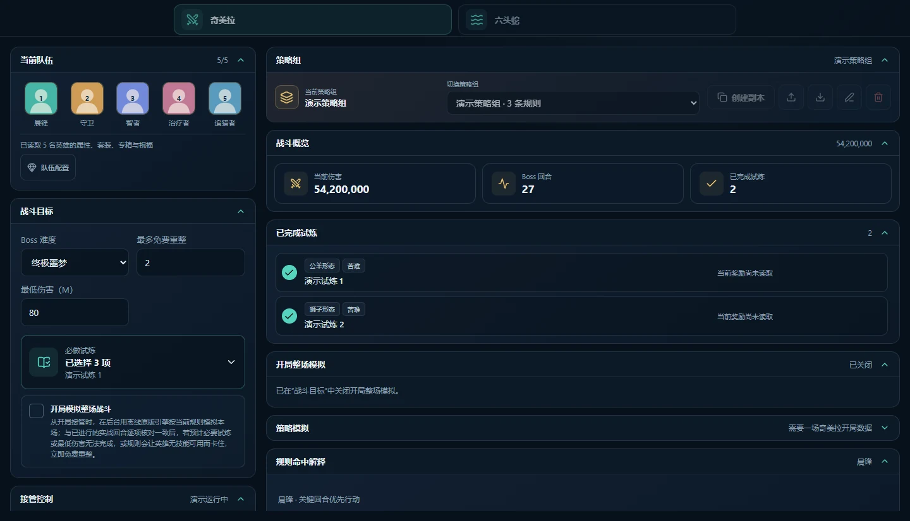
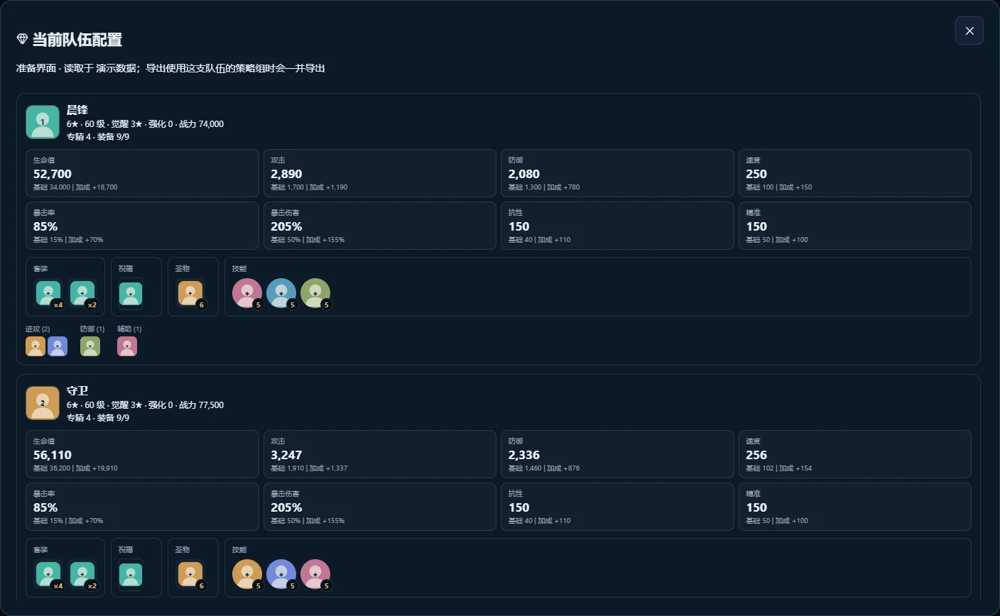
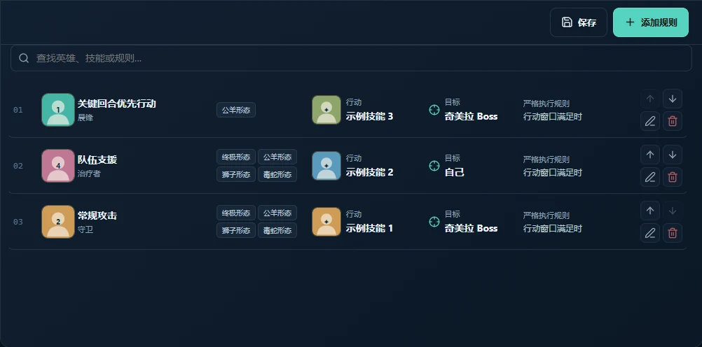

01
奇美拉试炼与模拟
跟踪形态、试炼链、效果和伤害。用已保存的开局数据按修改后的规则重打，或在新战斗开局推演整场，检查试炼与伤害目标。
模拟功能：实验性WINDOWS 桌面战斗助手
为 RAID: Shadow Legends 的奇美拉和六头蛇战斗编写规则、查看队伍配置、推演结果。所有操作都在本地 Windows 工具中进行。
开源项目 · 中英文界面 · Windows 桌面版
01 / 界面一览
选择 RAID 账号与 Boss，查看队伍、设定战斗目标，再按顺序编写行动规则。战斗过程和执行结果也能在同一工作区查看。

奇美拉和六头蛇使用独立的工作区与策略组。
检查所选英雄的配置，设定试炼或伤害目标。
排列技能规则，查看实时决策和运行日志。


02 / 核心功能
规划策略、理解实时战斗，并检查规则实际带来的结果。
跟踪形态、试炼链、效果和伤害。用已保存的开局数据按修改后的规则重打，或在新战斗开局推演整场，检查试炼与伤害目标。
模拟功能：实验性设置“前 N 次不标记指定英雄”等条件。开局推演预计的标记顺序；只有推演与已发生的实战回合一致时，才用于安全重整判断。
实验性查看所选英雄的属性、套装、祝福、圣物、技能和专精。分享策略时，还可以附上队伍配置供他人参考。
按顺序设置技能规则、条件和目标优先级，为奇美拉与六头蛇分别保存策略组，并查看各自的运行日志。
开局模拟与吞噬推演都属于实验功能；结果需要与实战回合核对，无法判断时不会以预测为依据重整。
03 / 快速开始
需要 Windows 桌面环境和本机 RAID: Shadow Legends 游戏客户端。
打开最新 GitHub Release，下载 RSL-Boss-helper 的可执行文件。
打开程序，选择正在运行的 RAID 账号及奇美拉或六头蛇工作区，并在游戏准备界面选好队伍。
保存策略组，设置目标与技能优先级，再观察战斗。要使用开局模拟或推演，请先开启对应功能，并从战斗开局接管。
04 / 关于项目
RSL-Boss-helper 是帮助玩家细化 Boss 策略的本地 Windows 开源项目。你可以浏览源码、阅读文档，或加入社区交流。
这是独立社区项目，与 RAID: Shadow Legends 或 Plarium 无关联。注入和自动化操作可能违反游戏规则，并带来账号风险。